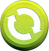
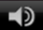

Creature from the Black Lagoon Game Rules
Wild Symbol
Free Spins
Game Functions
| Button | Function |
|---|---|
|  | Click to start a game round at the current bet level and coin value. |
| Click to view the game settings menu and select game options. Refer to Game Settings section below. | |
|  | Click to mute the game sounds or use the slider to adjust the sound volume. |
| Click to view the game rules. | |
| Click to view the Autoplay settings menu and play the game automatically. Select the number of spins to Autoplay or view the Advanced Settings to configure stop Autoplay options. | |
| Click to view the Paytable. | |
|
Click the arrows pointing to the left or right to scroll through the Paytable pages. |
| Click to go back to the main game. |
Game Setting Options
To access game settings, click the spanner icon in the game panel.
Advanced Autoplay Settings
Return to Player
Additional Information
Translations of Game Terminology
Note: The following table is only applicable if you are playing in a language other than English.
| English Term | Translated Term |
|---|---|
| Wild | Wild |
| Sticky Wild | Sticky Wild |
| Free Spins | Free Spins |
| Spreading Wild | Spreading Wild |
| Stacked Wild | Stacked Wild |
Game rules generated: